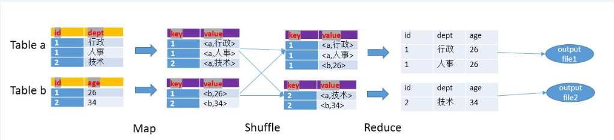
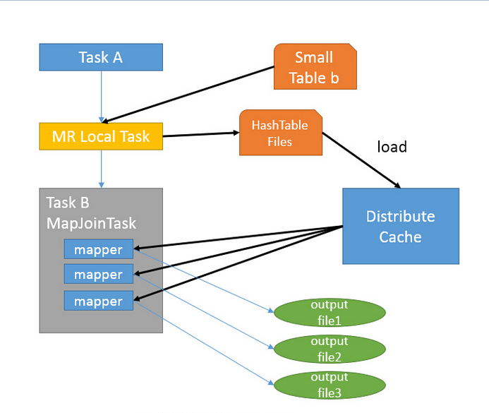

Hive
关联
hive中join的方式分为两种，一种是Common Join(Reduce阶段完成join)和Map Join(Map阶段完成join)
Map阶段
- 读取元数据 , 输出key和values
Shuffle阶段
- 将key和values按照不同的hash值推送到不同的reduce，确保两个表中相同的key位于同一个reduce中
Reduce阶段
- 根据key的值完成join操作，期间通过Tag来识别不同表中的数据

Map Join

总结:
使用场景:
有一个极小的表<1000行
需要做不等值join操作(a.x < b.y 或者 a.x like b.y)
select /*+MAPJOIN(a) */ a.start_level,b.* fromdim_level a join (select * fromtest) b where b.xx>=a.start_level and b.xx<end_level;读取
from pyspark.sql import HiveContext
conf = SparkConf()
conf.setAppName('')
conf.set('spark.serializer', 'org.apache.spark.serializer.KryoSerializer')
conf.set('spark.kryoserializer.buffer.max', '512m')
spark_session = SparkSession.builder.config(conf=conf).enableHiveSupport().getOrCreate()
sc = spark_session.sparkContext
hive_text = HiveContext(sc)
hive_context= HiveContext(spark_session)
df_sn_bi = hive_context.sql("select * from table")